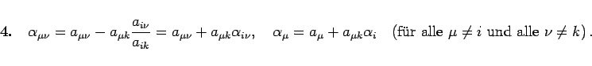

Inhalt Index DeskTop Bronstein

 Lineare Algebra Lineare Gleichungssysteme Lineare Systeme, Austauschverfahren Austauschverfahren
Lineare Algebra Lineare Gleichungssysteme Lineare Systeme, Austauschverfahren Austauschverfahren


Das in dem linken Schema hervorgehobene Element  wird Pivotelement genannt; es steht im Schnittpunkt von Pivotspalte und Pivotzeile. Die Elemente
wird Pivotelement genannt; es steht im Schnittpunkt von Pivotspalte und Pivotzeile. Die Elemente  und des neuen rechten Schemas werden nach den folgenden Austauschregeln bestimmt:
und des neuen rechten Schemas werden nach den folgenden Austauschregeln bestimmt:
| (4.106a) |
| (4.106b) |
| (4.106c) |
|  | (4.106d) |
Zur Rechenerleichterung (4. Regel) werden die Elemente dem Ausgangsschema als (m + 1)-te Zeile (Kellerzeile) hinzugefügt. Mit Hilfe dieser Austauschregeln können weitere Variable ausgetauscht werden.